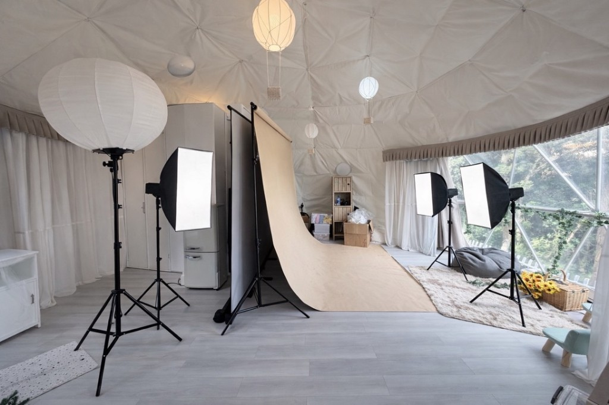
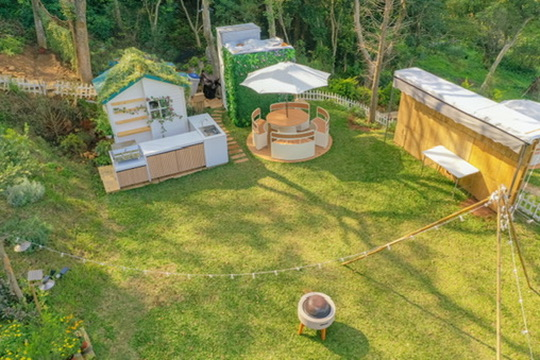
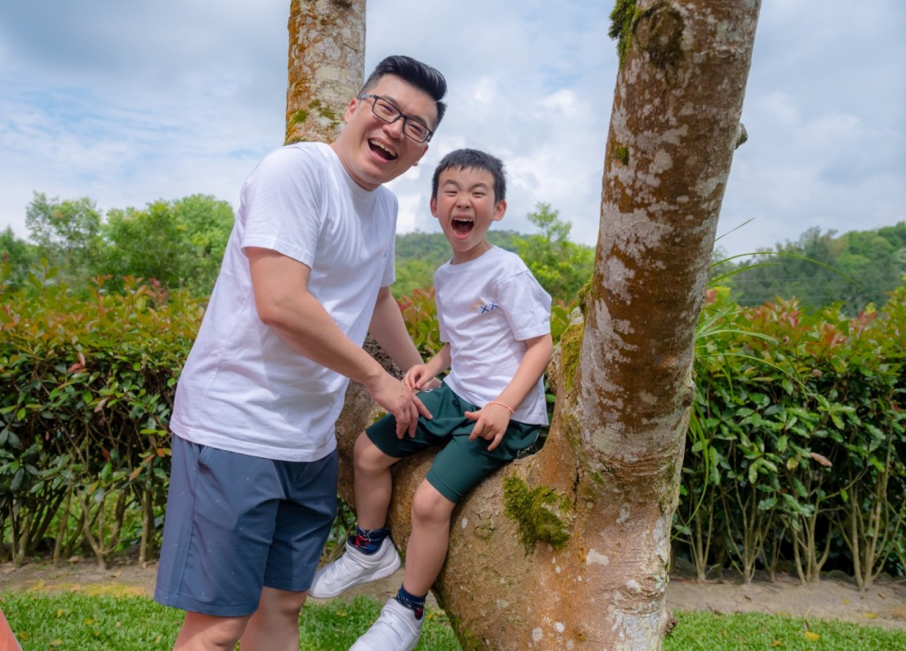
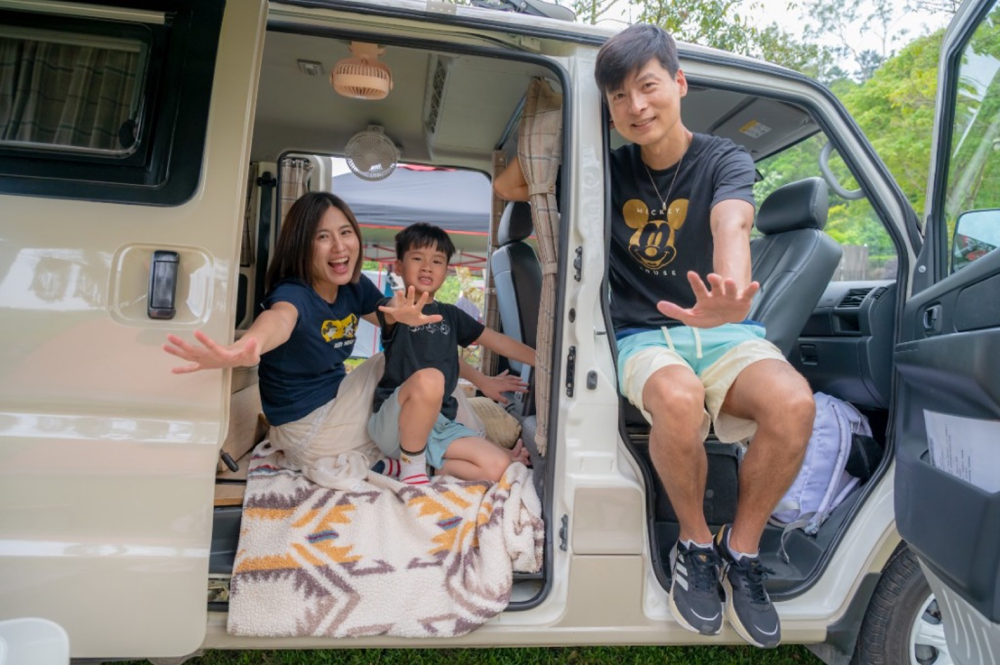

🎓 Professional graduation photo shoot for minibus teachers
The photo shoot is guided by the minibus teacher photography team, including academic uniforms, individual photos, group photos and family photos.
Limited cooperation project | Joyforest Camping Area × Minibus Teacher Photography Team
The first wave of graduation season discounts starts at NT$8,800｜Same price for 1–4 graduates
Joyforest Camping Area cooperates with the minibus teacher photography team to bring graduation photos from standard studios to forest grasslands, dome tents and camping scenes. Take photos of bachelor's uniforms, graduates' individual photos, group photos and family photos with a white background. After taking photos, you can stay for dinner, hot pot, barbecue, or directly upgrade to overnight accommodation.
The photo shoot is guided by the minibus teacher photography team, including academic uniforms, individual photos, group photos and family photos.
Use the grass, woods and natural light scenes in the Haohaosen camping area to take different graduation photos.
Combining dome tents and small tent props with a sense of outdoor life, the pictures have more stories than ordinary studios.
You can choose to stay briefly, have a meal and rest, or stay overnight to turn your graduation photos into a mini trip.
La Hao Sen is originally a forest-style camping area suitable for families, friends and small groups to stay. It has exclusive grassland, dome tents, outdoor kitchens and spaces where you can chat and dine slowly. This time, we cooperated with the photography team of Mr. Xiaoba. We hope that the graduation photos will not just end after taking them, but will become a day that the children, classmates and families will remember together.
When shooting, you can arrange academic uniforms with a white background to keep the official graduation commemoration; you can also go to the grassland, woods, dome tents, outdoor kitchens and camping-style small tent prop scenes to take natural interactions, group photos and family photos. After taking the photo, you can choose to have a simple rest, stay for a dinner, or stay one night according to the plan.
The Forestry Department Graduation Photoshoot was held at the Joyforest camping area in Lahaosen. A white background and lights can be arranged inside the dome tent, and outdoors there are grasslands, woods, outdoor kitchens and forest environments. After taking the photo, you can stay for dinner, hot pot, barbecue, or directly stay in the cloud room or hot air balloon room, turning your graduation photos into a complete little trip.



Keep the most classic form of graduation photos, suitable for commemoration, sending to relatives and friends, or school use.
Take photos of natural expressions on grass, woods, and tents. You don’t just stand still and take photos, but you also leave a real smile through interactive guidance.
Suitable for 2-4 graduates to take photos of classmates, friends, running interactions and camping-style group photos.
Each graduate can arrange to be photographed with his or her family, so that the graduation photo is not only a photo of the child, but also a souvenir for the whole family.
Use small camping-style tents, grass, and outdoor props to create a forest feel that is different from ordinary graduation photos.
Combined with the dome tent, grassland, outdoor kitchen and forest background of the Haosen camping area, the photos will have a more travel feel.
The Forestry Department Graduation Photo is not just about standing and taking photos. Instead, the formal graduation photos, natural interactions with the children, group photos of classmates and family photos are completed on the same day.
For this new plan, you can refer to the case of "Family Travel Friendship × Camping Graduation Photo" taken by Teacher Minibus in the past. When children come to grass, tents and natural environments, their expressions will be more relaxed than in ordinary studios, and it is easier to capture running, playing, interacting and real smiles.
We will still keep the formal graduation photos with white background in academic uniforms, so that the children can have a dignified, classic, and collectible graduation photo. Then we will take outdoor photos of grass, woods, tents, group photos, and family photos to give the whole set of photos a sense of formality and travel at the same time.
In the past, Mr. Xiaoba has taken photos that combined camping, family travel and graduation photos. Children are more likely to relax in an outdoor environment. The photo is not just a formal commemoration, but a complete memory of classmates, teachers, family and the atmosphere of the day's activities. This time we cooperated with the Kohaosen Camping Area in the hope of turning this shooting method into a more complete and reservable forestry department graduation photo plan.





Check out the reference case of the minibus teacher’s camping graduation photos
The photos are a reference for Mr. Minibus’ past camping graduation photos and graduation photo shoots. The actual shooting content will be adjusted based on the number of people on the day, weather, children’s status, reservation plan and venue arrangements. For graduation photos of the Department of Forestry, the formal white background academic uniforms will be retained, and outdoor lawns, tents, family photos and interactive scenes with nature will also be arranged.
The following are the first wave of discount prices during the graduation season. The price is the same for 1-4 graduates. You can also take the photo with 1 person. The best deal is to take 4 people together. The plan includes the minibus teacher’s photography service and the use of designated scenes of Hao Hao Sen; meals, ingredients, finishing, graduation album and video are extra.
NT$11,800 NT$8,800
The shoot lasted about 2 hours and the total stay was about 3 hours. Suitable for those who just want to take photos without having dinner or spending the night.
NT$14,800 NT$11,800
The shoot lasted about 2 hours and the total stay was about 3 hours. It is suitable for arranging graduation photos during holidays and does not require a long stay.
NT$15,800 NT$12,800
The shoot lasted about 2 hours and the total stay was about 5 hours. After taking pictures, you can stay in the camping area to rest, have a meal, hot pot, and simple barbecue.
NT$19,800 NT$16,800
The shoot lasted about 2 hours and the total stay was about 5 hours. Suitable for holiday family gatherings and graduation photography with friends and families.
NT$19,800 NT$16,800
The shooting lasts about 2 hours + one night’s stay. Suitable for turning graduation photos into a two-day and one-night trip to the forest.
NT$23,800 NT$20,800
The shooting lasts about 2 hours + one night’s stay. Families who prefer quietness, a bathtub with a view, and a slow-paced vacation feel.
NT$24,800 NT$21,800
The shooting lasts about 2 hours + one night’s stay. Prefer homes with exclusive lawns, outdoor kitchens and a more complete sense of gathering.
This plan requires both confirmation of the minibus teacher’s photography schedule and the availability of rooms in the Haohaosen camping area. Meals and ingredients are not provided in the camping area. Ingredients for dinners, hot pots, and barbecues need to be prepared by yourself. We will help confirm the date, number of people, plan and usage time before making a formal reservation.
If you have more than 4 graduates, or if you want to add more family photos, group photos, or interactive lawn scenes, it is recommended to purchase additional items.
If you want to save a little more time for the dinner and rest plan, you can add it according to the venue arrangement of the day.
The basic delivery is color-corrected photos. If you need detailed retouching, you can purchase additional photos.
You can add short videos to record your children’s graduation, interactions with classmates and the atmosphere of forest gatherings.
Suitable for people who just want to take graduation photos, family photos and forest scenes. Short stay and easiest on the budget.
You don’t have to leave immediately after taking the photo. You can stay for lunch, dinner, hot pot, barbecue or let the children play on the grass. This is the most recommended solution.
Stay overnight right after taking the photo, turning your graduation photos into a mini trip. It is suitable for several families to arrange more complete graduation memories together.
no. This is a complete shooting plan for the cooperation between Lahaosen Camping Area and Minibus Teacher’s photography team, including photography services, use of designated scenes, and stay, dinner or accommodation time arranged according to the plan.
Can. Same price for 1–4 graduates. When shooting with 1 person, there will be more time to arrange personal photos, family photos and different scene changes.
Yes, this option is suitable for 2–4 graduates to arrange with their respective families. If there are a large number of people, it is recommended to purchase additional shooting time and confirm the venue arrangements in advance.
No. Laohaosen Camping Area does not provide meals and ingredients. Guests are advised to buy hot pot, barbecue or simple meals by themselves. There are supermarkets and stores nearby where supplies can be arranged.
Dinner and overnight plans can use designated outdoor spaces and basic equipment according to on-site arrangements. The actual usable scope and equipment will be confirmed based on the room type and the day's schedule.
Can be arranged based on date and availability. The Cloud Room is quieter and has a resort feel, while the Hot Air Balloon Room has a more complete outdoor kitchen and lawn party feel.
After color correction, the photography team of Xiaoba Teacher provides cloud delivery of the photos. Comprehensive edition, commemorative book, and video can be purchased separately.
The shooting location was the Joyforest camping area in Taoyuan, which is located in the bayberry forest area. The official address and transportation method will be provided after completing the appointment.
Please use LINE or WhatsApp to tell us your desired date, number of graduates, number of families traveling with you, and whether you would like to choose a short stay, dinner break or overnight stay. We will assist in confirming photographers and camping area dates.
If you are looking for a different way to take graduation photos, the forest department graduation photos from Haosen Camping Area × Minibus Teacher Photography Team will be very suitable for families who want formal academic uniforms, natural outdoor, family photos and a sense of party. Welcome to inquire about the date first, and we will help confirm the photography schedule and the availability of the camping area.
#Joyforest #TaoyuanTaiwan #ForestPhotography #PrivateForestVenue #GraduationPhotography #FamilyPhotography #PetPhotography #OutdoorPortraits #GlampingTaiwan #Yangmei